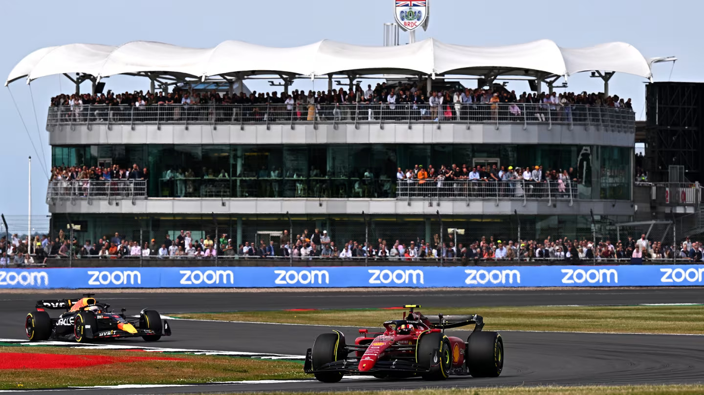
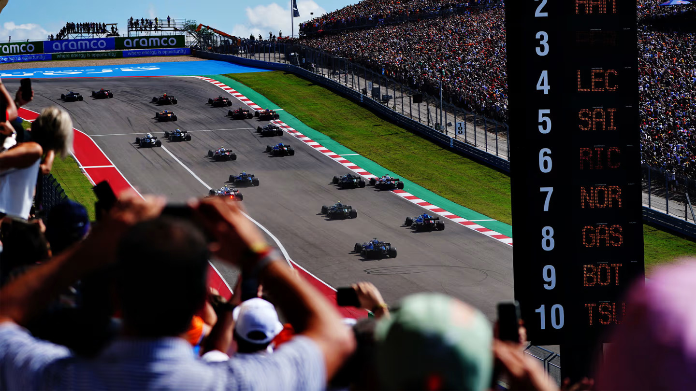
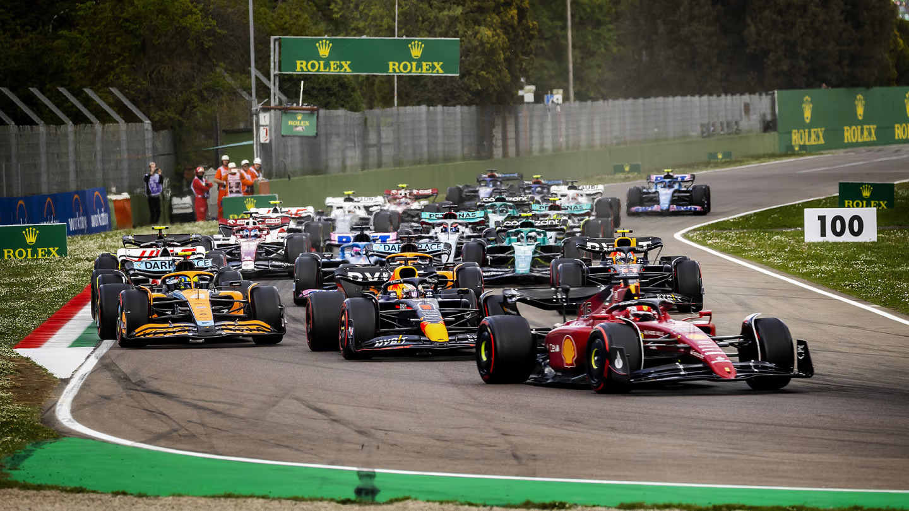
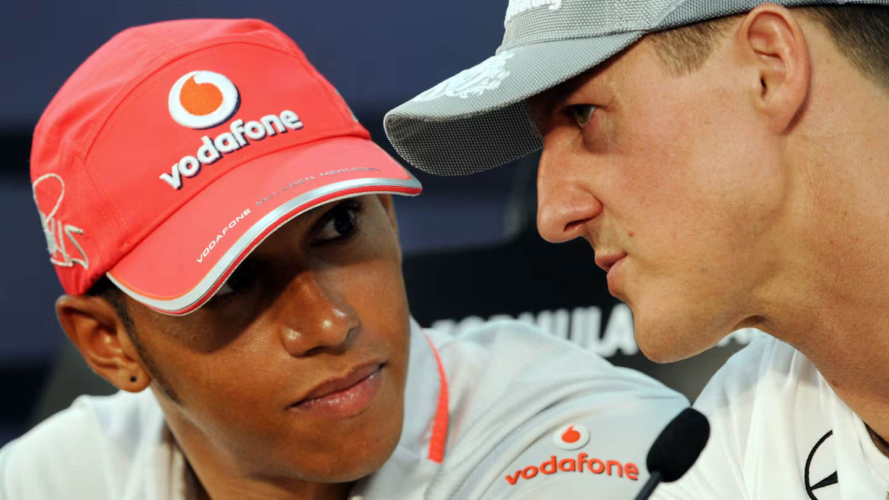

If you’re new to Formula 1, you may have a few questions about the sport and how our action-packed tour of the world is staged year in, year out. Well, we’ve got you covered. In an all-in-one explainer, we take you through the basics from how the championship was formed to the circuits visited, the drivers behind the wheel and the teams involved up and down the pit lane…
As the highest class of international racing for single-seater formula racing cars, Formula 1 is the pinnacle of motorsport and the world’s most prestigious motor racing competition. There really is nothing like it.
It’s a team sport (it needs to be to change all 4 tyres on a car in under 2 seconds!), but the drivers are more like fighter pilots than sportspeople. Battling extreme g-forces, making daring decisions in the blink of an eye – and at 370km/h. To be the best, F1 drivers push themselves – and their incredibly innovative machines – to the very limit.
Drivers compete for the esteemed F1 Drivers’ Championship, while the teams fight for the F1 Constructors’ Championship and prize money based on their position at the end of the season.
Each race is known as a Grand Prix, and they’re held in incredible locations around the world. 2024 will feature a record-breaking number of Grand Prix events, with 24 races set to take place this season.
A total of 20 drivers and 10 teams makes up the current Formula 1 grid, with each outfit fielding two cars.
This season, driver experience ranges from multiple world champions Lewis Hamilton, Max Verstappen and Fernando Alonso, to racers in their second seasons such as Oscar Piastri and Logan Sargeant.
When it comes to teams, there are those who have been in F1 since the early years, such as Ferrari (competing continuously since the very first season in 1950) and McLaren, or relative newcomers like Haas who entered the sport ahead of the 2016 season.
A total of 21 countries across five continents are included on the 2024 schedule, which features classic tracks such as Silverstone, Spa-Francorchamps and Suzuka, along with exciting recent additions to the roster including Las Vegas, Miami and Qatar – a varied selection that offers drivers and fans plenty to look forward to.
China returns to the Formula 1 calendar for the first time since 2019 (April 19-21) and will host the first F1 Sprint of 2024.
Formula 1’s inaugural season featured seven rounds, spread out from May to September, predominantly staged in Europe – the exception being the Indianapolis 500 in the United States, which most F1 drivers sat out.
New European events arrived as F1 developed, with the following decades also bringing adventures to South America, North America, Africa, Asia, Australia and, most recently, the Middle East – well and truly putting the ‘world’ in world championship.
Monaco, Monza, Silverstone and Spa are the four circuits that still feature on the F1 calendar from that very first campaign, although plenty of safety-based changes and track layout modifications have been made since then.
The standard Formula 1 weekend sees each event take place over three days – typically Friday, Saturday and Sunday.
Friday features two 60-minute Free Practice sessions (FP1 and FP2) for teams to set up their cars. These are typically used to make sure the car works as it should, before set-up changes are made and race preparations continue.
On Saturday, after a final practice session (FP3), drivers head into a three-stage qualifying session, with the slowest five drivers from the 18-minute Q1 phase eliminated, before five more go out of the 15-minute Q2 segment. That sets positions 20-11 on the grid prior to any penalties. A final 12-minute-long Q3 then decides the top 10 grid slots, along with the coveted pole position for the fastest driver.
Sunday brings the race itself, where drivers battle it out to score points, grab a spot on the podium and take the chequered flag first for the win.
Formula 1 races generally last between an hour-and-a-half and two hours, though this can be impacted by Safety Car periods that slow the field down or red flags that halt the action – see the 2023 Australian Grand Prix as a prime example.
Each race on the calendar has a set number of laps based on the length of their respective circuit. The distance of each race is almost always equal to the fewest number of laps that exceed 305 kilometres.
Monaco is an exception to the rule, where the race length is equal to the fewest number of laps needed to exceed a distance of 260km, given the lower speeds of its street circuit nature.
The Sprint is a short race. It covers 100km – about one-third of a typical Grand Prix distance – and should last about 30 minutes. This length has been chosen to encourage a race that is dynamic rather than strategic, with no mandatory pit stop.
While the bulk of the 2024 season consists of traditional Grand Prix weekends as we’ve covered above, six of them – a quarter of the 24 events in total – have been designated F1 Sprint events, which add another layer of excitement to proceedings.
A Sprint weekend is still a three-day affair with the Grand Prix as the main event, but the Sprint Qualifying session (which sets the grid for the Sprint) replaces FP2 on Friday afternoon. The Sprint itself takes place on Saturday (instead of FP3), before Qualifying for the Grand Prix happens as normal.
The venues chosen for Sprint events are all tracks with great overtaking potential, picked to try and ensure the Sprint is a flat-out, aggressive melee from start to finish. Points are on offer, from eight down to one, awarded for the first eight cars to finish.
Six venues will host F1 Sprint events in 2024. China and Miami make the Sprint line up for the first time, joining Austin and Qatar which both return to host their second Sprint events. Austria (hosting their third) and Brazil (hosting their fourth) complete the exciting 2024 F1 Sprint roster.
The reason why Formula 1 is called Formula 1 is two-fold.
First up, the ‘Formula’ is a set of rules – covering car design, engine size, component usage and much, much more – that all competitors must abide by. Secondly, the ‘1’ simply denotes that it is the premier formula.
Thousands of parts are involved in creating some of the fastest and most advanced racing cars on the planet – spanning detailed bodywork, suspension elements, turbo-hybrid power units, eight-speed paddle shift gearboxes, 18-inch tyres and much more.
When the engine powers it forward, an F1 car essentially acts as an aeroplane flipped upside down, with front and rear wings – and everything in between – pushing the car down onto the track and giving it incredible levels of grip through corners.
That said, F1’s current technical regulations are based around a ‘ground effect’ aerodynamic concept, with several carefully designed tunnels underneath the car’s floor sucking the car to the track surface to generate even more downforce.
This, combined with simpler bodywork than previous years, means less ‘dirty air’ – or disrupted airflow – is created and allows cars to follow each other more closely, opening up additional overtaking opportunities and adding to the on-track spectacle.
Formula 1 was formed as a world championship competition back in 1950, with the first-ever race held at the Silverstone Circuit – a former Royal Air Force station – in the United Kingdom on May 13 of that year.
Six more events were staged in a season which saw Alfa Romeo driver Giuseppe ‘Nino’ Farina become the sport’s first world champion – edging out team mates Juan Manuel Fangio and Luigi Fagioli.
While motorsport had been taking place since the late-1800s, with Grand Prix events growing in popularity across the following decades, 1950 marked the start of the official F1 championship that remains to this day.
From F1’s all-time list of world champions, Lewis Hamilton shares the overall record of seven drivers’ titles with Michael Schumacher. Hamilton claimed his first title with McLaren in 2008, before adding six more at Mercedes between 2014 and 2020, while Schumacher won the 1994 and 1995 crowns with Benetton, adding another five (in a row) at Ferrari from 2000 to 2004.
As it stands, Hamilton also holds the record for the most race victories, logging 103 to date, along with the most pole positions having taken 104 up to now.
Fellow multiple champions include Juan Manuel Fangio, who racked up five titles in the 1950s, Alain Prost, who won four across the 1980s and 1990s, Sebastian Vettel, who collected a quartet of championships on the bounce from 2010 to 2013, and reigning champion Max Verstappen, who took his third consecutive crown in 2023.
